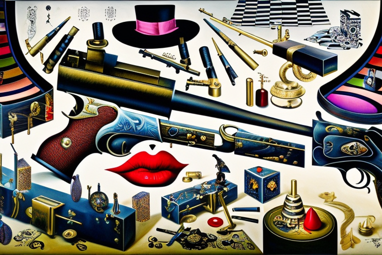

The hagfish shoes and the accidents
HOME
Table of Contents
The spread of fashion

It was the talk of the fashion world: a new fabric, the likes of which had never been seen before. Made from the slimy secretions of the hagfish, a primitive and reviled creature of the deep, this translucent, bulletproof material promised to revolutionize the way we dressed.
The story of the hagfish fabric began in the labs of a renegade scientist, Dr. Miriam Jacobs. She had been fascinated by the hagfish’s ability to produce slime as a defense mechanism, and wondered if this slime could be turned into a textile. After years of research and experimentation, she had finally succeeded.
The resulting fabric was a wonder to behold. It was lightweight and breathable, yet incredibly strong. It could stop a bullet in its tracks, yet still allow the wearer to move with ease. And it was translucent, giving it a futuristic, otherworldly look.
As news of the hagfish fabric spread, fashionistas and celebrities clamored to get their hands on it. It was the ultimate status symbol, a way to show off one’s wealth and taste.
But as the fabric became more and more popular, strange things began to happen. People who wore the hagfish clothing reported feeling a sense of unease, a creeping sensation that something was not quite right. And then, the accidents started.
At first, they were dismissed as mere coincidence. A woman wearing a hagfish dress fell down the stairs and broke her arm. A man wearing a hagfish suit was hit by a car and miraculously survived. But as the incidents piled up, it became clear that there was something sinister going on.
The last word of fashion

Now, we all know the hagfish is a slimy son of a gun, right? So it makes perfect sense that someone would think, “Hey, let’s make shoes out of that slippery slime!”
And so it began. The hagfish fabric craze started to die down, but some bold and reckless fashion designers decided to take it to the next level. They wanted to create shoes that were not only bulletproof, but also stylish as hell.
But let me tell you, it was no easy feat. The slimy nature of the hagfish made it damn near impossible to get those shoes to slide on concrete without tripping every other turn. People were falling left and right, breaking their ankles and cursing the day they ever laid eyes on those damn shoes.
But the fashion industry is a ruthless one, my friends. They were not about to let a little thing like common sense and safety get in the way of a hot new trend. And so they soldiered on, creating shoes that were slicker than a greased pig on ice.
The hagfish shoes were an instant hit. Celebrities were clamoring to get their hands on them, despite the high risk of injury. People were willing to risk life and limb to be seen in these shoes, strutting down the street like they were walking on air.
But as with all things, the hagfish shoes had a dark side. People started to disappear, their bodies never found. Rumors began to spread that the shoes were somehow responsible, that they were dragging people down into the depths of the earth. No one knew for sure what was happening, but the fear was palpable.
The epidemic of injuries
Let me tell you, these shoes were a nightmare for the healthcare industry. They were like a plague, spreading chaos and destruction wherever they went.
People were coming into hospitals left and right with broken bones, sprains, and all manner of injuries. It was like something out of a horror movie. And the worst part was, there was no stopping it.
The hagfish shoes were so slick and slimy that they caused people to slip and fall with alarming regularity. It didn’t matter if you were walking down the street or climbing a flight of stairs, those damn shoes would get you every time.
And the injuries were no joke. We’re talking shattered bones, torn ligaments, and all sorts of other nasty business. People were spending weeks, even months, in the hospital just trying to recover from the damage those shoes had done.
It was a dark time, my friends. Hospitals were overwhelmed, doctors and nurses were working around the clock, and still the injuries kept coming. It was like the hagfish shoes were possessed by some kind of malevolent force, determined to wreak havoc on anyone foolish enough to wear them.
The crusade of Muffy McQueen

Despite the chaos and destruction caused by the hagfish shoes, there were still some die-hard fashionistas who swore by their stylistic qualities. One such fashion icon was none other than the infamous Muffy McQueen.
Muffy was a force to be reckoned with in the fashion world, with a keen eye for the latest trends and an unerring sense of style. And when she saw those hagfish shoes, she knew they were the next big thing.
“Darlings, you simply must try these hagfish shoes,” she cooed in her sultry fashion magazine voice. “They’re positively divine! So soft and light, you’ll feel like you’re walking on clouds.”
And she wasn’t wrong. The hagfish slime was a marvel of nature, a soft and silky material that was incredibly lightweight and easy to work with. It was like nothing anyone had ever seen before, a true game-changer in the fashion industry.
But as we know, the hagfish shoes were not without their dark side. And for every fashionista like Muffy who raved about their stylistic qualities, there were ten more people nursing broken bones and shattered dreams.
Still, Muffy refused to back down. She continued to wear her hagfish shoes with pride, strutting down the runway like a queen. And for a time, it seemed like the world was ready to forget the dangers and embrace the beauty of these incredible shoes.
The lesson of safety

Eventually, the government had to step in. They issued a recall on all hagfish shoes, and put a ban on the material ever being used in footwear again.
As the chaos caused by the hagfish shoes had to be stopped, intelligence agencies around the world began to take notice. There were reports of organized crime syndicates using the slick and slimy material to create footwear that would allow them to commit crimes with ease, slipping away from the scene of the crime before anyone could catch them.
It was a nightmare scenario, and it was clear that something had to be done. The government scrambled to put together a task force to combat the hagfish shoe crime wave, but it was an uphill battle.
As the crimes continued to mount, the value of the hagfish shoes in the fashion world began to diminish. People were no longer willing to risk life and limb for the sake of style. It was a hard lesson, but a necessary one.
Fashion should be safe, above all else. It should enhance our lives, not endanger them. And while the hagfish shoes may have been a marvel of engineering and design, they were ultimately a failure when it came to safety.
It was a lesson that the fashion world would not soon forget. The industry began to shift its focus away from dangerous trends and towards more responsible, sustainable practices.
The hagfish shoes were relegated to the dustbin of fashion history, a cautionary tale for future generations. And while they may have been a source of chaos and destruction in their time, they ultimately served a greater purpose: to remind us that fashion should never come at the expense of our safety and well-being.